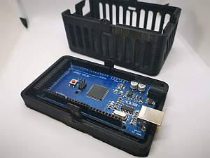

Hardware, Software, and Accessory Suppliers¶
Full Command Stations¶
CMME (Chesterfield Model Making & Miniature Electronics)¶
{kind=link}
Chesterfield Model Making and Miniature Electronics
Chesterfield sells a complete system in a 3D printed case already assembled and tested.
{kind=link}
Chesterfiled assembled DCC-EX Command Station
Cases / Enclosures¶
David Yale¶
{kind=link}
David’s Makerbot Thingverse page
David provides the files to make a 3D printed case or can sell an alread made case to fit the Mega DCC-EX Command Station with a motor shield, WiFi shield, and LCD display. He has several designs.
{kind=link}
David’s Makerbot Thingverse page
Chesterfield Cases¶
Chesterfield Model Making & Miniature Electronics
Chesterfield sells a case to fit the Mega DCC-EX Command Station as well as a tiny decoder adapter board (The Dave Falkenburg optoisolator board to pickup the DCC signal from the tracks) that can connect to a microcontroller and operate as a decoder or DCC packet sniffer with the right sketch See the Myna Bay Website .
Command Station Rack (The Mac Rack)¶
Neil’s DCC++/EX Controller Case
Created by Neil McKechnie, one of the the DCC-EX Team developers, this is a rack style 3D printed case that can hold the Command Station Arduino, Motor Shield and Raspberry Pi.